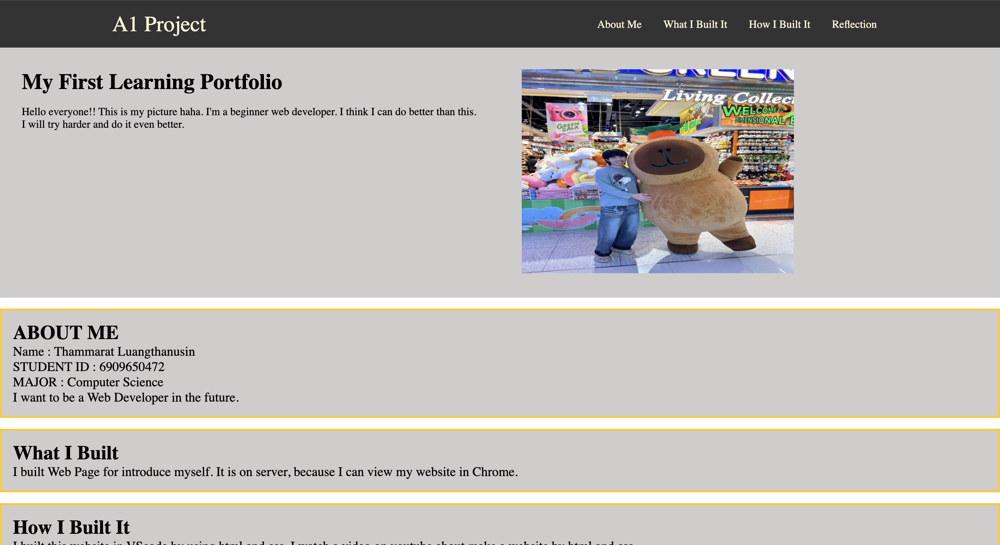
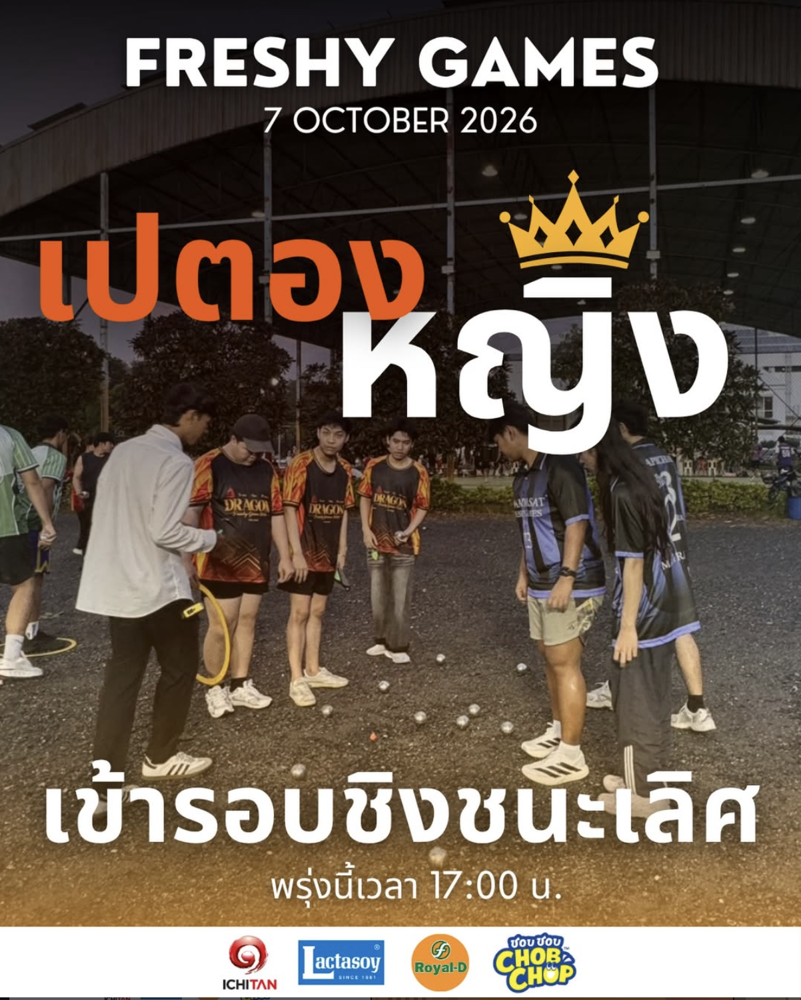

About me
Name : Thammarat Luangthanusin
STUDENT ID : 6909650472
MAJOR : Computer Science
Areas of interest : ผมสนใจในการสร้างเว็บไซต์ เพราะ มันเหมือนเป็นการนำเสนอความคิดสร้างสรรค์ของเรา

Name : Thammarat Luangthanusin
STUDENT ID : 6909650472
MAJOR : Computer Science
Areas of interest : ผมสนใจในการสร้างเว็บไซต์ เพราะ มันเหมือนเป็นการนำเสนอความคิดสร้างสรรค์ของเรา

Title: CS100 A1:My First Learning Portfolio
Type: Course Assignment
Date: 30 Aug 2026
Role: Website Developer
Description: พัฒนาเว็บไซต์Learning Portfolio หน้าเดียวด้วย HTML และ CSS นำเสนอตัวเองผ่านการสร้างเว็บไซต์
Skills: HTML, CSS, ทักษะการทำเว็บ
Reflection: ในการทำ My First Learning Portfolio ครั้งแรก ผมได้ฝึกการใช้ HTML และ CSS ทำให้ผมเริ่มเข้าใจการทำงานของ สองส่วนนี้ แรกๆผมมีปัญหาในการจัดตำแหน่งขององค์ประกอบต่างๆ อย่างเช่น รูปภาพ แต่ก็ได้ทำความเข้าใจ และแก้ไขในแต่ละจุด ถ้าพัฒนาต่อ ผมอยากปรับให้หน้าเว็บดูดีขึ้น และใช้งานได้ในหลากหลายอุปกรณ์ได้ดีมากขึ้น
กดตรงนี้เพื่อดูงาน A1
Title: การแข่งขันเปตอง Freshy Game
Type: การแข่งขันกีฬา
Date: 6 Oct 2026
Role: นักกีฬาเปตอง
Description: เป็นตัวแทนของคณะวิทยาศาสตร์และเทคโนโลยี ในการลงแข่งขันกีฬาเปอง ในงาน Freshy Game
Skills: ได้ทักษะในการเล่นกีฬาเปตอง
Reflection: ได้รู้ว่ากีฬาเปตองเป็นกีฬาที่ท้าทายและสนุกมาก ไม่ใช่แค่การโยนให้ใกล้ลูกแก่นอย่างเดียว แต่มันคือการที่ทีมต้องสามัคคีกัน ในการโยนลูก เพื่อเอาแต้มจากฝั่งตรงข้าม
กดตรงนี้เพื่อดูการแข่งเปตอง